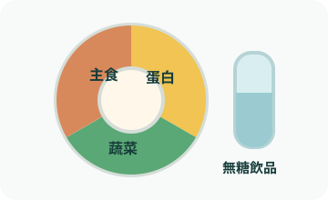

專業使用提醒
本工具供營養師衛教溝通與初始估算，CKD、透析、孕期、低血糖風險、胰島素調整或高齡衰弱需個別化。

Meal Split
三餐熱量配比
--
Education Table
每餐份量與衛教說法
| 餐次 | 熱量 | 醣量 | 全穀雜糧 | 豆魚蛋肉 | 蔬菜 | 油脂 | 衛教提醒 |
|---|
Taiwan Food Exchange
台灣常見食物選項
Patient Script
營養師衛教估算
依個案資料建立三餐起始配比，搭配常見外食代換與臨床提醒。
本工具供營養師衛教溝通與初始估算，CKD、透析、孕期、低血糖風險、胰島素調整或高齡衰弱需個別化。

Meal Split
--
Education Table
| 餐次 | 熱量 | 醣量 | 全穀雜糧 | 豆魚蛋肉 | 蔬菜 | 油脂 | 衛教提醒 |
|---|
Taiwan Food Exchange
Patient Script